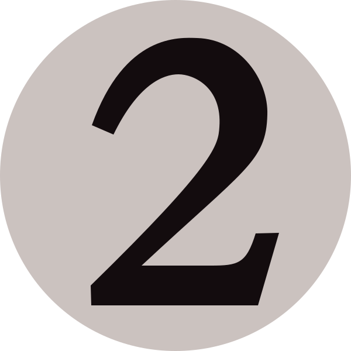
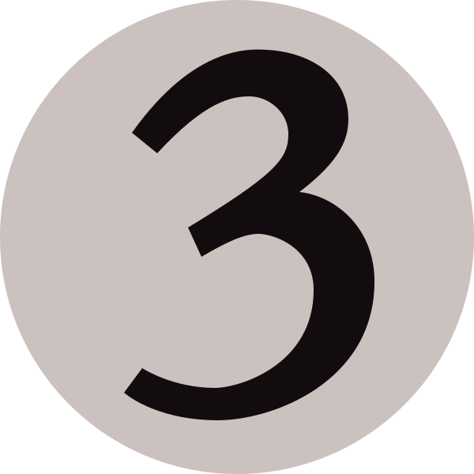

Card images from Scryfall, go check them out and support them!
If you do use this or have used my page for Reality Fracture, please let me know how you found it, and if you think there's anything that I could improve (Currently planning on adding tags for cards, so you could filter to only see counterspells, etc.)
This page focuses on the cards that can interact with you, so not including abilities like the basic landcyclers.
To use this page, look at the open mana the opponent has, and click on the buttons below that they have available. everything above 4 mana is listed under 4.
For example, if your opponent has 2 plains and a swamp open, you click on White, Black and 3, and you'll get a list of the possible cards they might be holding mana open for.

